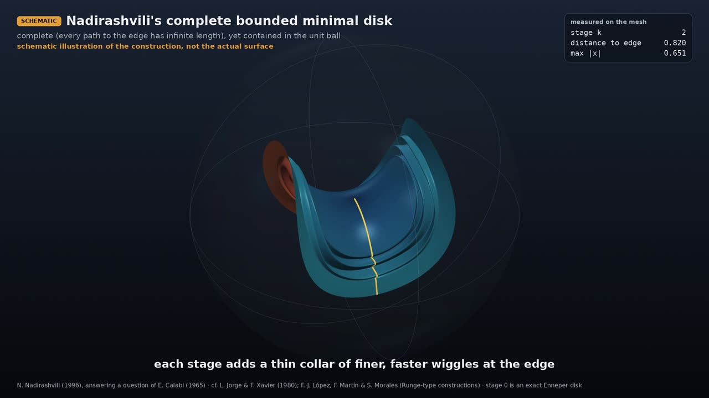

Professor of Mathematics
Paata Ivanisvili
Department of Mathematics, University of California, Irvine

Nadirashvili’s complete minimal disk inside a ball

SCHEMATIC animation · narrated
Why it is remarkable. A surface is complete when you cannot walk off it in finite distance: every path on the surface that runs off toward its “edge” (eventually leaving every finite piece of the surface) has infinite length. In 1965 Calabi conjectured that a complete minimal surface in space cannot be bounded, i.e. cannot fit inside a ball. In 1996 Nadirashvili disproved this: he built a complete minimal surface, topologically a disk, that fits inside a ball. The idea is to add ever finer, steeper wiggles near the edge, so the surface barely grows in space while the distance you must walk along it to reach the edge becomes infinite.
Nadirashvili’s disk necessarily crosses itself (it is immersed, not embedded): by Colding and Minicozzi (2008), a complete embedded minimal surface of finite topology can never be bounded.
What the animation shows. Stage 0 is an exact piece of Enneper’s minimal surface inside a translucent sphere. Each later stage adds a thinner collar of finer and faster ripples. The collars only illustrate the mechanism; they are not the actual surface, and the video says so on screen. The counters are measured on the mesh: the walking distance from the centre to the edge (the shortest path is drawn in gold) climbs from 0.40 to 4.1, while the farthest point from the centre only creeps from 0.40 to 0.81.
N. Nadirashvili, Invent. Math. 126 (1996), answering a question of E. Calabi (1965). Earlier: L. Jorge & F. Xavier (1980), a complete minimal surface between two parallel planes. Later: T. Colding & W. Minicozzi, Ann. of Math. 167 (2008).